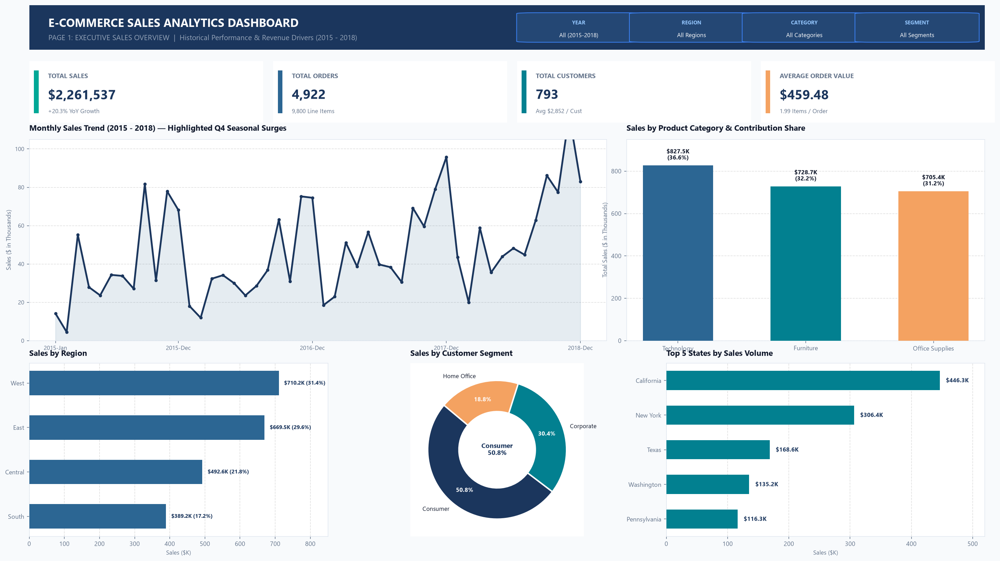

Applied Analytics
Featured Projects
 ⭐ Major Featured Project
⭐ Major Featured Project
Healthcare Data Analytics & Insurance Cost Dashboard
An end-to-end healthcare data analytics project focused on analyzing insurance costs, patient demographics, risk factors and regional trends. The project covers data cleaning, feature engineering, exploratory analysis, SQL analytics and interactive Power BI dashboard development.
Python
Pandas
NumPy
Matplotlib
Seaborn
MySQL
Power BI
DAX
Key Insights
- Smokers have significantly higher average healthcare charges.
- Healthcare costs generally increase with age.
- Higher BMI and risk levels are associated with higher insurance costs.
Project Analytics Workflow
Raw Data
→
Data Cleaning
→
Feature Engineering
→
EDA
→
SQL Analysis
→
Power BI
→
Business Insights

E-Commerce Sales Analysis Dashboard
An interactive sales analytics dashboard developed to analyze sales performance, product categories, customer segments and regional trends.
Power BI
Excel
SQL
Python
Sales KPIs
Category Analysis
Regional Analysis
Sales Trends

Disaster Management Analytics Dashboard
An interactive dashboard designed to analyze disaster events, affected regions, casualties, economic impact and disaster trends.
Power BI
Excel / CSV
Data Analytics
Disaster KPIs
Disaster Type Analysis
Geographic Analysis
Trend Analysis